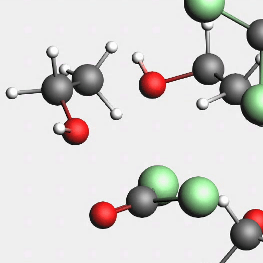
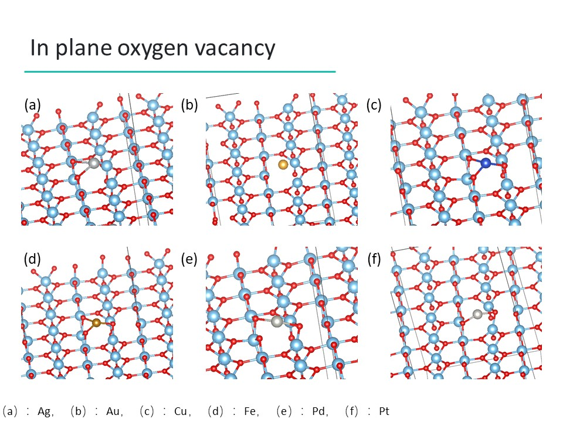

- About this Competition
- I am a member of the team of Dalian University of Technology. We won the second plcae among 17 top universities in China.
- My work included developing a mathematical model to predict the time of iodine-clock reaction

Zhe Liu
zhe17@ualberta.ca
You can also reach me via zhe.liu@rwth-aachen.de
I can't receive any email sent to liuzhe97@mail.dlut.edu.cn after May 2020
About Research Experience Other Experience Curriculum Vitae
Hi, nice to see you!
I am a second year thesis-based master student at the Department of Chemistry, University of Alberta, working with Prof. Gabriel Hanna. I am doing theoretical chemistry research. We are developing the new dynamics methodologies of the mixed quantum-classical system, based on the quantum-classical Liouville equation (QCLE).
Currently, I am also a visiting student at the RWTH Aachen University (Advisor, Prof. Kai Leonhard). Here, we use ReaxFF and DFTB to study the phosgenation of alcohols and amines. This is a part of the AutoCheMo project.
I received my Bachelor of Science degree from the Zhang Dayu School of Chemistry, Dalian University of Technology. I am very proud of being a member of this class. I was a visiting student at the Dalian Institute of Chemical Physics, CAS, (Advisor, Prof. Hongjun Fan) and the University of Calgary (Mitacs Globalink Program, Advisor, Prof. Peter Kusalik). Click here for my full CV.
During my undergraduate studies, I did some projects in computational chemistry. My previous research includes the photocatalysis of titanium dioxide, the ab-initio molecular dynamics simulations of hydroxyl radical in aqueous solution, and the solvation process in lithium battery electrolytes. I am interested in almost everything in theoretical and computational chemistry, and always open to starting new research.
In my computational chemistry projects, I used AMS, VASP, p4vasp, VESTA, CPMD, VMD, and Gaussian under Windows and/or Linux operating systems. I also have the experience in C++, MATLAB, Python, Fortran and LaTex.
Apart from these, I am a Go player (You must have heard of AlphaGo!). I also enjoy visiting meseums, hiking and travelling during my leisure time.
- Theoretical Chemistry
-
- Simulate the Quantum Dynamics of the Excitonic Quantum Battery
This project and publications are in progress. Title and contents may change.Advisor, Prof. Gabriel Hanna July 2020 - Present
In a recent study, our group showed that it is possible to indefinitely store an exciton in an invariant symmetry-protected subspace of a quantum network that is coupled to two thermal baths. The exciton can then be extracted by introducing an additional bath that breaks the symmetry of the network. This study demonstrated the potential of using such a system as a quantum energy storage device. We are exploring the parameter space of the previously studied model and identifying parameter regimes that maximize the exciton transfer efficiency to a sink. - Simulate the Quantum Dynamics of the Excitonic Quantum Battery
-
Mixed Quantum-Classical Liouville Dynamics in the Position Basis
Advisor, Prof. Gabriel Hanna Nov. 2019 - June 2020
The quantum-classical Liouville equation (QCLE) is a well-known approach to simulating the dynamics of mixed quantum-classical systems – a quantum subsystem coupled to a classical environment. A recently developed “Deterministic evolution of coordinates with initial decoupled equations” (DECIDE) method has demonstrated promise in solving the QCLE with high accuracy and low computational cost for a certain class of model systems. In this project, we investigated the ability of the DECIDE method for treating Hamiltonians expressed in a position basis , such as those encountered in the study of proton transfer reactions.For example, the Tully's model and the Azzouz-Borgis proton-transfer model. - Computational Chemistry
-
Reactive Force Field Parameterization for Phosgenation of Alcohols and Amines
This project and publications are in progress. Title and contents may change.Advisor, Prof. Kai Leonhard Sept. 2020 - Present
Our group is interested in the phosgenation of alcohols and amines. As no appropriate parameter set for the fast force field ReaxFF is available, we need an extensive training set containing intermediate and transition-states geometries computed at an appropriate quantum-mechanical level to develop such a force field. To generate the training set, we first explored the reaction network with fast classical force fields, such as ReaxFF or DFTB. Then we performed quantum-mechanical reoptimizations for meta-stable intermediate and transition-state geometries. Kinetic theory is then applied to the reoptimized geometries to obtain accurate reaction rate constants. -
Theoretical Studies on the Structures and Properties of TiO2 Surface Adsorbed by Single Metal Atom
This project is my undergraduate thesis. The language of the thesis is not English. Contact me for full thesis and slides.Advisor, Prof. Hongjun Fan Jan. 2019 - June 2019
After absorbing transition metals on the surface, titanium dioxide (Rutile) exhibited a significant photocatalytic activity improvement. This improvement is affected by the atom type, loaded positions and surface structures. In this research, we calculated the single atom loaded rutile surface in different situations. We studied three different surfaces, stoichiometric TiO2 and two different reduced TiO2 (In plane oxygen vacancy and bridging oxygen vacancy. Previous studies of the first vacancy were insufficient). The results provided us the adsorption energy of metals, geometry and electronic structures of the loaded surfaces. -
Probing Reactions of the Hydroxyl Radical in Aqueous Environments
Collaborator: Carlos Enriquez-VictoreroAdvisor, Prof. Peter Kusalik July 2018 - Oct. 2018
We performed ab-initio molecular dynamics simulations (Car–Parrinello molecular dynamics, CPMD) for hydroxyl radical and chlorine in aqueous solution. The CPMD method introduced the fictitious electron mass to prevent time-consuming self-consistent calculation in each time step. The simulations provided a description of the geometry and electronics structures of hydroxyl radical and chlorine, and the interactions between them and water molecules. Our results helped us understand the effect of different electron mass. -
Theoretical Studies on the Solvated Structures and Properties of Lithium Ions in Dimethyl Carbonate
Advisor, Prof. Hongjun Fan June 2017 - June 2018
We have noted an abnormal increasing of the coordination number of lithium in Dimethyl Carbonate (DMC, a commonly used electrolyte in Lithium batteries) when decreasing the concentrations. To investigate this phenomenon, we calculated the solvation energies and structures of the lithium solution complex. We also proposed some improvements for our previous coordination number measurement.
- Teaching Experience
-
CHEM 10X General Chemistry Experiments
Teaching AssistantJan. 2020 - Apr. 2020
CHEM 303 Environmental Chemistry Course Instructor: Prof. Julianne M Gibbs
Teaching Assistant - AIChE Chem-E-Car Competition Mar. 2017 - Sept. 2017
-
- Select Awards and Scholarships
-
RWTH Aachen – University of Alberta Junior Research Fellowship
2020
Globalink Graduate Fellowship, Mitacs 2019
Outstanding Graduates, Dalian University of Technology 2019
Mitacs - CSC (China Scholarship Council) scholarship 2018
DICP scholarship, Dalian Institute of Chemical Physics 2015 - 2016, 2016 - 2017